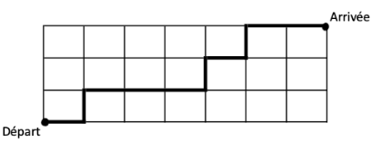

Ensembles, cardinaux, principes additif et multiplicatif
Parties et opérations sur les ensembles
Intuitivement, un ensemble est une collection d'objets.
Chacun de ces objets est désigné par un nom ou un symbole qui lui est propre.
Ces objets peuvent être énumérés, séparés par des virgules ou points virgules, tout cela entre deux
accolades ; l'ordre n'a pas d'importance.
Dans ce cas, on dit que l'on définit un ensemble par extension.
On appelle cardinal d'un ensemble le nombre de ses éléments.
\(A = \left\{2 ; -1,5 ; x ; y\right\}\) est un ensemble de cardinal 4.
On note \(\textrm{Card}(A)=4\).
On note \(\emptyset\) l'ensemble vide. On a \(\textrm{Card}(\emptyset)=0\).
Il existe des ensembles infinis : par exemple, les ensembles de nombres usuels (\(\mathbb{N},
\mathbb{Z},
\mathbb{Q}, \mathbb{R}\)) sont infinis. Leurs cardinaux peuvent être construits, mais ce ne sont pas
des
entiers naturels (hors programme).
Un ensemble est infini lorsqu'il contient une suite d'éléments tous distincts.
L'ensemble des multiples de 10 : \(\left\{0;10;20;30;\ldots\right\}\)est infini puisqu'il contient la suite
\((10n)_{n\in\mathbb{N}}\) (tous ses éléments sont distincts car cette suite est strictement croissante).
Parties et opérations
On dit que A est une partie (ou sous-ensemble) d'un ensemble E lorsque tous les
éléments de A sont des éléments de E, et on note A⊂B. On note \(\mathcal{P}(E)\)
l'ensemble
des parties de E.
On peut créer une partie en utilisant une propriété : par exemple
\(A=\left\{x\in\mathbb{R}, x^2=1\right\}\) est une partie de \(\mathbb{R}\) (de deux éléments : -1
et 1) ;
on dit que A est définie en compréhension.
\(\complement_E A=\overline{A}=\left\{x\in E, x\notin A\right\}\) est le
complémentaire de A dans E (les éléments de E qui ne sont pas dans A).
l'intersection A∩B contient les éléments à la fois dans A et dans
B.
la réunion A∪B contient les éléments à la fois dans A ou dans B.
Le «ou» est inclusif : on prend aussi les éléments à la fois dans A et dans B.
\(\complement_E A = \left[0;2\right[\cup\left[5;10\right]\)
\(\complement_E B = \left[0;4\right]\cup\left\{10\right\}\)
\(A\cup B = \left[2;10\right[\)
\(A\cap B = \left]4;5\right[\)
\(A\) désigne les entiers naturels multiples de 2 inférieurs ou égaux à 12, et \(B\) désigne les
entiers
naturels multiples de 3 inférieurs ou égaux à 12 ;
Déterminer les parties suivantes et calculer leurs cardinaux :
\(A\), \(B\), \(A∪B\), \(A∩B\), leurs complémentaires.
\(
\textrm{Card}(A\cap B)
\leqslant
\begin{array}{l}
\textrm{Card}(A)\\
\textrm{Card}(B)\\
\end{array}
\leqslant
\textrm{Card}(A\cup B) \)
Pour dénombrer, on utilise souvent le diagramme de Venn ci-contre.
Diagramme de Venn
Dans une classe de 35 élèves, 15 élèves s’inscrivent uniquement à l’atelier théatre (T), 8 élèves
s’inscrivent uniquement à l’atelier musique (M) et 4 élèves s’inscrivent à ces deux ateliers à la fois.
Combien d’élèves s’inscrivent dans au moins un atelier ?
\(\textrm{Card}(T\cup M) = 15 + 8 + 4 = 27\)
Combien d’élèves ne s’inscrivent dans aucun atelier ?
On s’intéresse aux défauts de freinage et d’éclarage de 500 véhicules d’un réseau d’entreprises. Parmi
eux,
65 ont au moins un défaut de freinage (F), 150 ont au moins un défaut d’éclairage
(E) et 50 présentent les deux défauts. Combien de véhicules de ce réseau ne présente aucun des deux
défauts
?
Penser à utiliser un tableau à double entrée dans les cas où le diagramme de Venn serait moins
approprié.
À leur entrée en L1, les étudiants choisissent une langue (anglais ou allemand) et une option
(informatique, chimie ou astronomie). Dans un groupe d'étudiants, 12 étudiants sont inscrits en
astronomie, 15 en chimie, 16 étudient l'allemand. Par ailleurs, 8 inscrits en astronomie et 3
inscrits
en informatique étudient l'anglais, 6 inscrits en chimie étudient l'allemand.
Indiquer la répartition des étudiants par discipline, ainsi que le nombre total d'étudiants dans
le
groupe.
Astro
Ch
Inf
total
Ang
All
total
Astronomie
Chimie
Informatique
total
Anglais
8
3
9
20
Allemand
4
6
6
16
total
12
9
15
36
(long)
Dans une entreprise, il y a 800 employés. 300 sont des hommes, 352 sont membres d'un syndicat, 424 sont
mariés, 188 sont des hommes syndiqués, 166 sont des hommes mariés, 208 sont syndiqués et mariés, 144
sont
des hommes mariés syndiqués. Combien y a-t-il de femmes célibataires non syndiquées ?
142
k-uplets et produit cartésien
\(E\), \(F\), \(G\) sont trois ensembles (non vides).
On appelle produit cartésien de \(E\) et de \(F\), noté \(E\times F\),
l'ensemble
des
couples \(\left(x;y\right)\) avec \(x\in E\) et \(y\in F\).
On appelle produit cartésien de \(E\), \(F\) et \(G\), noté \(E\times
F\times
G\),
l'ensemble
des
triplets \(\left(x;y;z\right)\) avec \(x\in E\), \(y\in F\) et \(z\in
G\).
On appelle produit cartésien de \(k\) ensembles \(E_1;\ldots;E_k\) noté
\(E_1\times \ldots \times E_k\), l'ensemble des
\(k\)-uplets \(\left(x_1; \cdots; x_k\right)\) avec pour tout
\(i\in\left\{1;\ldots;k\right\}\), \(x_i\in E\).
Lorsque tous les \(E_i\) sont un même ensemble \(E\), on note \(E^k\) le produit
cartésien
\(E\times \ldots \times E\).
Un produit cartésien de deux facteurs peut se présenter sous la forme d'un tableau. Pour un
produit
de trois facteur ce n'est pas possible (il faudrait un «tableau» à 3 dimensions).
\(E = \left\{0;1;2\right\}\) et
\(F = \left\{10;20;30;40\right\}\) ; on a :
\(E\times F\)
10
20
30
40
0
(0;10)
(0;20)
(0;30)
(0;40)
1
(1;10)
(1;20)
(1;30)
(1;40)
2
(2;10)
(2;20)
(2;30)
(2;40)
un repère du plan ou de l'espace étant fixé :
\(\mathbb{R}^2=\mathbb{R}\times \mathbb{R}\) est l'ensemble des couples de réels : il
désigne
l'ensemble des points du plan .
\(\mathbb{R}^3=\mathbb{R}\times \mathbb{R}\times \mathbb{R}\) est l'ensemble des triplets de
réels :
il désigne l'ensemble des points de l'espace.
Dans un jeu de cartes traditionnel, chaque carte est repérée par sa hauteur, dont l'ensemble des valeurs
possibles est \(H=\left\{1_{\textrm{as}} ; 2; 3 ; 4 ; 5 ; 6 ; 7 ; 8 ; 9 ; 10 ; V ; D ; R \right\}\)
et par sa couleur (notion différente de la couleur rouge/noire de la carte) dont l'ensemble des valeurs
possibles est \(C=\left\{♠;♣;{\color{red}♥};{\color{red}♦}\right\}\)
.
Écrire sous forme de produit cartésien et donner le cardinal de :
l'ensemble de toutes les cartes ;
l'ensemble de toutes les as ;
l'ensemble de toutes les cœurs ;
l'ensemble de toutes les figures dont la couleur est rouge ;
\(\left\{V; D ; R\right\} \times \left\{{\color{red}♥};{\color{red}♦}\right\}\) ; cardinal :
6
Remarque : On pourrait intervertir \(H\) et \(C\) mais attention : une fois
choisi, l'ordre à une importance.
On appelle liste ordonnée d'un ensemble E,
avec répétition, de longueur \(k\) un
\(k\)-uplet d'éléments chacun pris dans \(E\) ; ce \(k\)-uplet est donc lui-même un élément de \(E^k\).
Par abus de langage, on dit parfois «\(k\)-uplet d'éléments de \(E\)».
Un mot de 6 lettres est un 6-uplet de l'alphabet : «lettre» est différent de «letter» (l'ordre a une
importance et on peut répéter des lettres : ici e et t).
Un code secret de carte bancaire est un 4-uplet de \(\left\{0 ; 1 ; 2 ; 3 ; 4 ; 5 ; 6 ; 7 ; 8 ;
9\right\}\)
Principe multiplicatif
\(E, F, E_1, \ldots, E_k\) sont des ensembles finis.
le nombre de codes secrets possibles pour une carte de paiement ;
104 = 10 000
le nombre de mots (avec ou sans sens dans une langue) possibles avec 5 lettres ;
265 = 11 881 376
le nombre de mots de passe possibles au lycée (6 chiffres et lettres majuscules) ;
366 = 2 176 782 336
Lorsque les répétitions sont possibles et que l'ordre a une importance, on
doit souvent utiliser une des 3 formules précédentes.
Une plaque d'immatriculation est constituée de deux lettres puis trois chiffres, puis 2 lettres à nouveau.
On exclue les lettres I, O, U pour ne pas les confondre avec 0, 1 et V. Combien y a-t-il de plaques
possibles ?
\(L\) est l'ensemble des lettres utilisées et \(C\) est l'ensemble des chiffres. Leur
cardinal est respectivement 23 et 10.
Une plaque correspond à un élément de \(L^2\times C^3\times L^2\), qui est de cardinal
232×103×232 = 279 841 000 possibilités.
Sur mon digicode (4 chiffres), je me souviens que le 2e chiffre est un 1 ou un 7, et le dernier un zéro.
Combien de codes faut-il tester ?
\(C = \left\{0 ; 1 ; 2 ; \ldots ; 9\right}\) sont les 10 chiffres. Un code possible est
un élément de \(C\times \left\{1;7\right\}\times C\times \left\{0\right\}\), ce qui laisse
10×2×10×1 = 200 possbilités.
À la cantine, on propose 3 entrées, 4 plats et 2 desserts. Combien de menus sont possibles si l'on prend
chaque élément ? Si l'on a le droit de ne pas prendre d'entrée et/ou de dessert ?
En prenant chacun des éléments : 3×4×2 = 24 possibilités
Si l'on a le droit de ne pas prendre d'entrée et/ou dessert il suffit de rajouter une possibilité pour
ces deux éléments (par exemple pour les desserts : dessert1, dessert2, rien : 3 choix possibles au lieu
de 2). On a donc 4×4×3 = 48 possibilités.
Application : cardinal de \(\mathcal{P}(E)\)
On rappelle que lorsqu'on énumère les éléments d'un ensemble (entre accolades, par extension),
l'ordre n'a
pas d'importance (autre que la lisibilité pour le lecteur).
L'ensemble des parties de l'ensemble \(E=\left\{a ; b ; c\right\}\) contient toutes les parties (ou
sous-ensembles) possibles de cet ensemble \(E\), c'est à dire :
la partie vide \(\emptyset\), qui compte 0 éléments ;
les singletons (un singleton possède un unique élément) :
\(\left\{a\right\}\) ; \(\left\{b\right\}\) ; \(\left\{c\right\}\)
Mathéo a des devoirs à remettre en maths, physique, et LLCE aujourd'hui. Mais il ne souvient pas
s'il les a
mis dans son sac ou non, ni, s'il en a mis, lesquels. Par combien de situations différentes cela
peut-il se
traduire ?
Si \(E\) est l'ensemble des 3 devoirs, le sac représente une partie de \(E\) : les devoirs
pris,
qu'il
va pouvoir remettre.
maths : pris ou pas : 2 possibilités
physique : pris ou pas : 2 possibilités
LLCE : pris ou pas : 2 possibilités
ce qui au total fait 2×2×2 = 8 possibilités. remarque : on pourrait représenter la situation sous la forme d'un arbre
binaire ayant
une profondeur de 3 : 23 = 8 branches au total.
Un ensemble \(E\) de cardinal \(n\) a \(2^n\) parties :
on a \(\textrm{Card}(\mathcal{P}(E))=2^n\).
Démonstration : Pour \(A\subset E\)
fixée, on définit sur \(E\) la fonction \(\chi_A(x)=1\) lorsque \(x\in A\) et \(\chi_A(x)=0\)
lorsque \(x\notin A\). Chaque fonction \(\chi_A\) caractérise une seule partie \(A\). Si \(E\) a
\(n\) éléments, une telle fonction correspond à une \(n\)-liste d'éléments
de \(\left\{0;1\right\}\), soit \(2^n\) possibilités.
Techniques de dénombrement
Factorielle : rappels
Pour \(n\in\mathbb{N}\), on appelle factorielle de \(n\) et on note \(n!\)
l'entier
\(n\times(n-1)\times\cdots\times 2\times 1\) ; par convention \(0!=1\).
\(E\) est un ensemble fini, non vide, de cardinal \(n\).
Pour tout entier \(k\geqslant 1\), le nombre de listes de \(k\) éléments de \(E\) est
\(n^k\).
Pour tout entier \(1\leqslant k \leqslant n\), le nombre de listes de \(k\)
éléments
distincts est \(n(n-1)\cdots(n-k+1)\) (\(k\) facteurs)
qui s'écrit aussi \(\dfrac{n!}{(n-k)!}\)
Démonstration :
On utilise le principe multiplicatif : dans le premier cas (avec remise), il y a \(n\) possibilités
pour
chaque élément de la \(k\)-liste (élément de \(E^k\)), d'où \(n^k\) possibilités.
Dans le second cas (sans remise, éléments de la \(k\)-liste 2 à 2 distincts), il y a \(n\)
possibilités
pour
le premier élément de la liste, \(n-1\) pour le deuxième, \(n-2\) pour le troisième... jusqu'à
\(n-(k-1)=n-k+1\) pour le kième (dernier) élément de la \(k\)-liste.
Une urne contient 10 boules (numérotés de 0 à 9). Combien y
a-t-il
de tirages possibles
de 3 boules :
avec remise (on remet la boule tirée dans l'urne après chaque tirage) ?
Un tirage est une liste de 3 éléments parmi 10 : 10×10×10 = 1 000 possibilités.
sans remise (la boule tirée sort définitivement de l'urne) ?
Sans remise, un tirage est une liste de 3 éléments 2 à 2 distincts
parmi 10, donc 10 possibilités pour le premier, 9 pour le deuxième, 8 pour le
troisième,
soit : 10×9×8 = 720 possibilités.
On nomme arrangement de \(k\) éléments de \(E\) une \(k\)-liste ordonnée
(classée)
d'éléments distincts de
\(E\) (tirage sans remise).
Calculer le nombre de podiums (3 places) possibles pour le classement de la ligue 1 de football (20
équipes). Calculer le nombre de podiums possibles contenant le TFC.
On recherche le nombre de triplets (ordonnés) d'éléments distincts pris parmi les 20 équipes :
c'est le nombre d'arrangements possibles de 3 équipes parmi 20, soit
\(\dfrac{20!}{(20-3)!}=20\times 19\times 18 = 6840\) dodiums possibles.
Si Toulouse fait partie du podium, on fait plusieurs cas (disjoints) :
Toulouse en premier : on complète avec un couple (ordonné) parmi les 20 équipes :
\(1\times 19 \times 18\) possibilités.
Toulouse en deuxième : on complète avec un couple (ordonné : pour la 1re et 3e place)
parmi les 20 équipes : \(19\times 1 \times 18\) possibilités.
Toulouse en troisième : on complète avec un couple (ordonné : pour la 1ere et 2e place)
parmi les 20 équipes : \(19\times 1 \times 18\) possibilités encore.
Au total on a \(3\times 1\times 19 \times 18 = 1026\) possibilités.
Permutations
On appelle permutation d'un ensemble \(E\) de \(n\) elements toute liste de \(n\)
éléments distincts de \(E\) (c'est à dire un arrangement de \(n\) éléments de \(E\)).
Une permutation de \(E\) peut être vue comme une façon d'énumérer (en classant) les éléments d'un
ensemble.
Le nombre de permutations d'un ensemble de \(n\) éléments est \(n!\).
Un anagramme est un mot obtenu par permutation des lettres d'un autre mot ; par exemple «orange» est
un
anagramme de «organe». On ne se préoccupe pas de la signification du mot obtenu. Dénombrer les
anagrammes
des mots suivants :
«pi» ;
«rien» ;
«maths» ;
«facteur» ;
«fini» ;
«abba» ;
«tralala».
Attention aux trois derniers (cf méthode ci-dessous).
Si des lettres sont répétées, on divise, pour chacune, par la factorielle du nombre de répétitions
(faire permuter les lettres indiscernables donne la même liste).
Combinaisons : rappels
On nomme combinaison de \(k\) éléments de \(E\) une \(k\)-liste
d'éléments
distincts de
\(E\) non ordonnée (l'ordre n'a pas d'importance, pas de classement).
Une combinaison \(k\)
éléments de \(E\) est donc une partie de \(E\) possédant \(k\)
éléments.
On note \({n\choose k}\) «\(k\) parmi \(n\)» le nombre
de
combinaisons de \(k\) éléments d'un ensemble de cardinal \(n\).
\({n\choose k} = \dfrac{n!}{(n-k)!k!}\)
Démonstration :
Exactement \(k!\) arrangements de \(k\) éléments parmi \(n\) correspondent à une seule
combinaison
de \(k\)
éléments parmi \(n\) : l'ordre des \(k\) éléments de la liste n'a pas d'importance, on peut les
faire
permuter sur les \(k\) places : on divise donc e nombre d'arrangments possibles
\(\frac{n!}{(n-k)!}\) par
\(k!\) pour obtenir le nombre de combinaisons possibles.
On a :
\({n \choose n} = {n \choose 0} =1\) et
\({n \choose k} = {n \choose {n-k}}\)
ainsi que la relation de Pascal (pour \(1\leqslant k \leqslant n-1\)) :
\({n \choose k} = {{n-1} \choose {k}} + {{n-1} \choose {k-1}} \)
Démontrer ces propriétés et construire le triangle de Pascal jusqu'à n=6.
\({n\choose 0} = \dfrac{n!}{(n-0)!0!} = \dfrac{n!}{n!\times 1} = 1\) ou bien : il y
a
une seule partie à 0 éléments : la partie vide \(\emptyset\)
\({n\choose n} = \dfrac{n!}{(n-n)!n!} = \dfrac{n!}{1\times n!} = 1\) ou bien : il y
a
une seule partie à n éléments dans un ensemble de n éléments : l'ensemble \(E\)
lui-même.
\({n\choose {n-k}} = \dfrac{n!}{(n-(n-k))!(n-k)!} = \dfrac{n!}{k!(n-k)!} = {n\choose
k}\) ou bien : choisir
une partie à k éléments dans un ensemble de n éléments revient à choisir sa partie
complémentaire à n-k éléments.
\(
{{n-1}\choose {k}} + {{n-1}\choose {k-1}}
\) \(
= \dfrac{(n-1)!}{(n-1-k)k!} + \dfrac{(n-1)!}{((n-1)-(k-1))!(k-1)!}
\) \(
= \dfrac{(n-1)!}{(n-1-k)k!} + \dfrac{(n-1)!}{(n-k)!(k-1)!}
\) \(
= \dfrac{(n-k)(n-1)!}{(n-k)k!} + \dfrac{k(n-1)!}{(n-k)!k!}
\) \(
= \dfrac{\left[(n-k)+k\right](n-1)!}{(n-k)k!}
\) \(
= \dfrac{n!}{(n-k)k!}
\) \(
= {n \choose k}
\)
ou bien : Fixons un élément \(x\) ; choisir
une partie à k éléments dans un ensemble de n éléments revient à choisir une partie
à k
éléments contenant \(x\), complétée par une combinaison de k-1 éléments parmi n-1
(sans
le \(x\)) ou bien à choisir une partie à k éléments ne contenant contenant pas
\(x\), c'
est à dire parmi n-1 éléments.
n\k
0
1
2
3
4
5
6
0
1
1
1
1
2
1
2
1
3
1
3
3
1
4
1
4
6
4
1
5
1
5
10
10
5
1
6
1
6
15
20
15
6
1
Le 1er mai 2028, la séquence basket commence en EPS, et chacun des 49 élèves de la classe
négocie avec le prof de sport pour être sélectionné dans la dream team (5 joueurs). Combien y a-t-il de
dream team possibles ?
On choisit une combinaison (partie) de 5 élèves parmi 49, soit
\({49}\choose{5}}=\dfrac{49!}{(49-5)!5!}=\dfrac{49!}{(44)!5!}=\dfrac{49\times\ldots 45}{5\times 4
\times
3 \times 2}=1\,906\,884\)
On trace dans un plan 5 droites en position générale (c'est-à-dire que deux droites ne sont jamais
parallèles, et 3 droites ne sont jamais concourantes). Combien de triangles a-t-on ainsi tracé ?
Un triangle est déterminé par 3 droites (ses côtés). Il y a autant de triangles que de possibilités de
choisir 3 droites parmi 5, c'est-à-dire \({5\choose 3} = \frac{5\times 4}{2} = 10\).
(dur).
Vrai ou faux ? Le nombre de
trajets les plus
courts pour aller du départ à l’arrivée sur le quadrillage ci-contre est égal à 120.
indication : Coder les déplacements vers la droite par la lettre D et vers le haut par la lettre H.